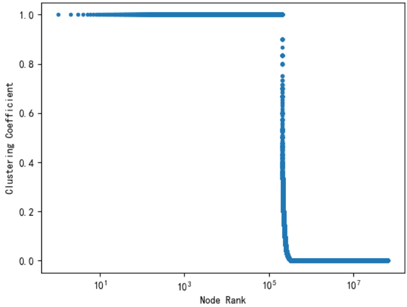

路由器拓扑的小世界性
聚类系数衡量了拓扑中的节点之间聚合成团的程度，它代表了每个节点的邻接节点之间相互连接的程度。一个聚类系数较大网络具有小世界特性。这种特性意味着，拓扑中任意两个节点之间都可以通过很少的跳数到达。一个节点`v_(i)`的聚类系数可以通过下面的公式来计算：

其中，`G_(\Delta)(v_(i))` 代表拓扑中以`v_(i)`为顶点的三角形的个数，`d_(i)`代表节点`v_(i)`的度数。

上图展示了2019年1月路由器拓扑的各个节点的聚类系数，可以看出路由器级别的拓扑的聚类系数都很小，仅有1%的节点具有较高的聚类系数，这说明路由器级别的拓扑中的节点的聚类系数普遍较低，不具有小世界特性。